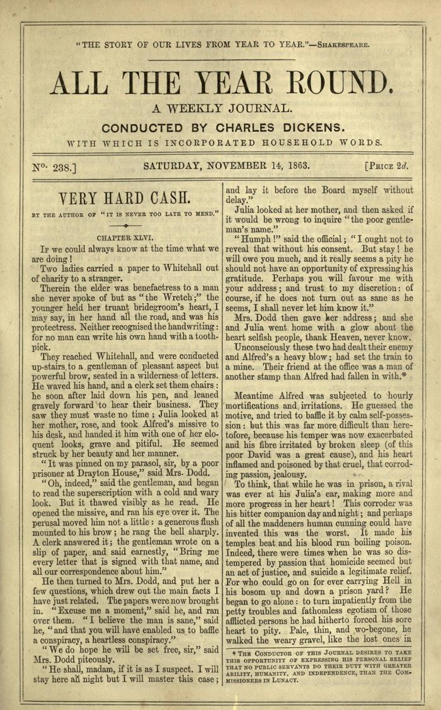
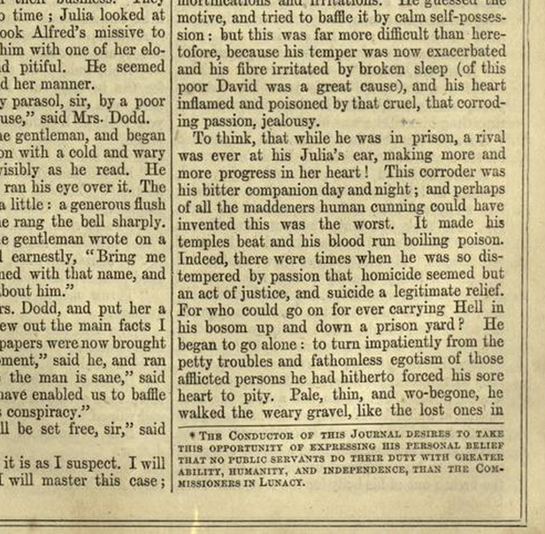

Introduction: Making a “Matter-of-Fact Romance”
The preface to Charles Reade’s documentary fiction, Hard Cash opens, fittingly, with a list. Reade insists his novel is a “matter-of-fact romance,”
that is, a fiction built on truths; and these truths have been gathered by long, severe, systematic labour, from a multitude of volumes, pamphlets, journals, reports, blue-books, manuscript narratives, letters, and living people, whom I have sought out, examined, and cross-examined, to get at the truth on each main topic I have striven to handle.1
In enumerating the many materials he uses to organize these “truths,” Reade enacts the documentary practice that he will sustain throughout the novel’s chronicle of abuse in Victorian prison asylums. He presents a compilation of evidence linking between his novel, a network of documents, and real world “facts,” and does so with the hint of literary flair, noting the physical effort required to obtain these facts.
But along with this documentary impulse, Reade introduces another element. Countering critics who see his novel’s description of the asylum system as unrealistic, he appeals to the legitimacy of his evidence with more evidence. He adds the following footnote to amend the claim that he is one of the “Sensation Novelists”:
*This slang term is not quite accurate as applied to me. Without sensation there can be no interest: but my plan is to mix a little character and a little philosophy with the sensational element.2
It is no coincidence that Reade uses a footnote to express this recipe for sensational fiction. Footnotes are woven throughout Reade’s “matter-of-fact romance,” and serve as an apparatus of fact and the vehicle through which Reade appends “information” to his text. These seemingly minor textual elements juxtapose the factual and the sensational and allow the Readian narrator an opportunity to craft the art of presenting data-driven fiction.
This chapter will examine Reade’s footnoting practice: the cultural, aesthetic, and informatic logics to footnoting as one instance of indexical practices in the novel. In particular, I argue, the footnote is not merely an apparatus of research or a scholarly device, but rather a means of producing and conditioning the reader to the feeling––or affect––of information. Reade’s blend of “sensational information” and documentary fiction is an occasion to study the cultural apparatus of citation and how we manage, circulate, and link to other documents–the cultural logic of citation in the mid-nineteenth century Britain.3
Researching Reade
My interest in how we read Charles Reade’s research technologies stemmed from a research experience. I read Reade in my Victorian novel seminar with Professor Rachel Buurma, whose research focuses on Reade, his research methods, and his particular brand of realism. The seminar had a particular interest in the culture, practices, and literary modes of research in both nineteenth and twenty first century contexts. Reade’s research was as extensive as he claimed, leaving a mass of printed material in two archival locations that included “classified guard-books,” bill-books, indexed folios, a receipt-book, and enough separate indexes to the collection as a whole to warrant an “Index ad Indices” (an “index of indexes”).4 The seminar conducted archival research on the collection of Reade’s archive housed in Princeton Firestone Library.
Reading Hard Cash, I didn’t know what to make of the footnotes and before visiting the archive I was interested in examining their relation to the note-cards, newspaper clippings, and notebooks in which Reade practiced a kind of cut-and-paste commonplacing. In both informal discussions with Professor Buurma and in her lecture, “Charles Reade’s Research,” her work in Reade’s research practices raised a question for me––as Reade’s research translate into the novel what indexing tools and information devices emerged within the final form of the novel itself? Thus, the path to my particular reading of Reade is one situated in a web of documents and persons, much like Reade’s.
The Footnote in Fiction
Positioned at the bottom of the text, at once a part of it and separate from it, the footnote plays a curious role. As an example of what Gerard Genette famously calls “paratext,” the footnotes serve as a “threshold,” an opening into the text. 5 This peripheral position places the footnote in a “double bind,”6 and “double existence”7 as speaks “in two voices at once”8 and makes the text “no longer a finished corpus of writing, some content enclosed in a book or its margins, but a differential network, a fabric of traces referring endlessly to something other than itself, to other differential traces.”9 Here, this marginal information system that “imparts information” necessarily “interferes” not only with its narrative content,10 but with the physical process of reading the text.11 The insistent footnoting here calls attention to the ever-present materiality of the text, the physicality of both text and information as corpus.
The footnote’s literal positioning as separate from the main text has led critics to note its role as the site for metafiction, as in Thomas Sterne’s self-referential romp, Tristam Shandy 12 where the status of the novel-as-novel plays out in the humble space of the footnotes. When the footnotes reference real or historical events, as Peter Cosgrove points out, these tend to be regarded as naively empirical, 13 or objective references to the real world. Another description of the footnote in fiction reads the historical referent as inevitably subsumed in fiction and therefore becoming fictive itself.14 Mayer points out the ways that the presence of historical references in Sir Walter Scott’s Waverly Novels contribute to the “illogical” claim that the novels make “to being read as both fiction and history.”15 Both of these critical perspectives become caught up in the footnote’s fictionality, reducing a problem of reference to a simple dichotomy and a problem of representation.
Elaine Freedgood takes a different tactic. Drawing on Genette, she notes that footnotes in the nineteenth century literary text creates a “metaleptic effect.”16 We see this effect in “the intrusion of the narrator into the space the space of the reader,” breaking down boundaries between the “world in which one tells and the world of which one tells.” 17 Freedgood argues that footnotes in the novel Canadian Crusoes do the work of establishing the idea of a historical correspondence with a fictional place, establishing the idea of reference through mapping a fictional world onto a real one in a way that maintains the separate spheres of real and representational space, in so doing, helps do the work of imperialism.18
Freedgood points us to the possibility that footnotes do not only contribute to the reality effect or historical effect of the novel, and need not create definitive lines between real and representation. Drawing on her argument, I suggest that the metaleptic work of footnotes socializes the reader in how to feel toward information. Building off Genette’s notion of the paratextual note as an opening, I argue that the footnote itself provides an occasion to critique the assumption that the medium of information transfer is non-neutral, draw attention to the textuality and materiality of the citation as a thing in order to rethink its indexical correspondence between the spheres of the real and the fictive.
An Overview of the Footnotes in Hard Cash
Beginning in the preface, Reade’s footnotes append information to the text. Hard Cash features twenty-four footnotes in the main text, one prefatory footnote, and fourteen endnotes embedded within a character’s diary. While first instance of a footnote that we see in Hard Cash is Reade’s own gloss on “Sensational Novelists,” the footnotes themselves range from a brief descriptions that feature slight clarification of a single word, to extensive examples or external referencing. Like Sir Walter Scott, Reade’s footnotes include both fictional editorial comments and references to real historical events. 19
Loosely speaking, we might classify the twenty-five main footnotes in the following categories:
Types of Footnotes (number of entries noted parenthetically):
1) Definitions (8)
2) Calculations and evidence for data (5)
3) Bibliographic references to other works and quotations (5)
4) Sardonic commentary: editorializing and conjecture (4)
5) Clarifications and editorial corrections (3)
Calculations and evidence for data are most often reference to common knowledge, such as, for instance the current attitudes toward weight shape, the dynamics of a ship in a storm, or the exact time for the revolution of the earth. Bibliographic references to other works can be broken up further. They range from quotations from a specific person (Garth, The Duke of Wellington) to printed works (Francis’s British Railway, Evan’s Commercial Crisis); and stylistically from the specific (Railway Subscribers, published 1846) to the general (the pamphlets and journals of the day).
A glance at this attempted taxonomy of Reade’s footnotes, however, shows its shortcomings. What we might classify as Reade’s definitions and clarifications frequently fall under sardonic commentary as well, as evidenced by Reade’s choice adjectives for them ––”a term rather hastily applied”20––or, in the case of “not* unaccompanied” and “not** undisturbed,”21 uses the form of the footnote to translate these instances of litotes into their readily understandable forms while mocking the convoluted syntax. Likewise, what we might read as “clarifying” footnotes also tilt toward editorializing, as they are frequently structured as a clarification followed by an interpretation or conjecture. Opening up this classification leads to other questions regarding my original taxonomy––ie, should a bibliographic reference be counted in a separate category from other data?––that in sum, suggest a larger question: is there, in fact, a substantive difference in the function of these different footnotes?
Despite the difficulty in parsing out exactly which footnotes fit into which categories, the notes do clearly present different types of information. When presenting data or bibliographic citations (categories 1, 2, 3) the footnotes in the main text seem to conform to the old assumption that “the text persuades, the notes prove.”22 As facts are clarified, definitions given, and other works referred to, the reader reading the text encounters mechanisms that guide them through the motions of consulting a dictionary, verifying calculations, reading an encyclopedia, or drawing on common sense. On the other hand, the presence of categories 4 and 5 suggests something more akin to the use of the literary footnote as means for satire (ironically, of information management itself) seen in eighteenth century works,23 with examples including Alexander Pope’s Dunciad and Jonathan Swift’s Tale of A Tub.
Reading Reade’s footnotes are made more complicated by the fact that there is not one, but three separate footnoting entities within Hard Cash: the researcher/author (Charles Reade), the periodical editor (Charles Dickens),24 and the fictional character (Alfred Hardie). In what follows I will examine these different types of footnoting practices.
The Researcher’s Footnotes Documentation vs. Citation
Like his character, Edward Dodd, who methodically collects information from the newspaper, the “Morning Advertiser,” Reade was a fanatical researcher.25 Given Reade’s proclamation about the evidence behind this “matter-of-fact romance,” the reader might expect the novel’s footnotes to provide documentation of the research behind the work, and the discursive voice of the researching author adding, clarifying, and citing these fragments of information that constitute the novel.
Looking back at the footnotes in Hard Cash, however, we see a curious practices in what Reade does and does not cite. Despite the fact that the novel revolves around a banking scandal, and the wrongful diagnosis of insanity, information about finance and insane asylums is not footnoted in the text. This is not to say that Reade lacks documentation on these topics, but rather that in the novel, these passages lack explicit footnoted citation. There are a slew of historical and contemporaneous “facts” that are presented without footnotes, including information on the brain,26 the history of the song “Aileen Airoon,” 27 Indian banking, 28 social Darwinism and evolutionary biology, 29 his “formula” for the operation of asylums, 30 and the legal system. 31 Of these topics that does cite, Reade cites them inconsistently. Though he use footnotes to define one Greek phrase, he leaves other inclusions of Greek and Latin words in Hard Cash untranslated and un-referenced. After the first citing of the two lines by Garth, no further quotations or excerpts from songs are cited, despite the novel’s heavy use of them.
Though many of Reade’s technical knowledge on specialized topics goes uncited, lack of a footnoted citation does not mean lack of evidence, but, instead, illustrates how Reade’s footnotes play a different role than providing evidentiary proof for the main text. With Reade’s extensive series of notecards for Hard Cash we can sketch out a possible path of production behind some of the notes, tracing them back to documents of Reade’s research, the large note cards that he writes contain: “medical, maritime, religious, scientific, matter, etc, books, journal, facts, maxims, dialogue, Dicksoniana.” 32 A few excerpts gleaned from archival materials at the Princeton’s Firestone Library and Doug Bankson’s transcription of these same note cards show:
The terse footnote reference to “Garth” corresponds to lines from Samuel Garth’s dispensary, which appears as “Garth’s Dispensary” on page 20.33
The footnoted reference to the “Harper’s Weekly” of a black prisoner’s execution by water included appears as a clipping.34
Reade’s footnote to print materials covering the railway and financial crisis can be traced to up to an untitled clipping of an article on railway speculation.35
Reade’s final footnote on “nautical slang” correspond to several notes on the topic 36
Reade’s curious lack of standardization in these citational practices or with the standardization of reference texts suggests a mode other than merely standardized reference practices. 37 Again, we must remember that the vast majority of Reade’s footnotes, while they may be drawing on documents in his personal archive, are not explicitly citing bibliographic material. While clearly interested in noting the “real referent” in the information, these footnotes seem less concerned with the authenticating power of detailed bibliographic reference than they are concerned with creating the affect of research.
The Editor’s Footnotes: Hard Cash in Serial Form
Interpreting the presentation of information within the margins of Hard Cash becomes a more complicated process when we consider the fact that the novel was first published serially in Very Hard Cash in Charles Dickens’s periodical, All the Year Round(ATYR) from March 28, 1863 to December 26, 1863. There, it would have been read within a heterotopia of other genres, including other pieces of fiction, advertisements, and news stories that often serve as the factual basis for Reade’s fiction.38 Periodicals themselves possessed a citation culture, and footnotes from authors and editors were present throughout periodicals in varying levels of frequency depending on the type of publication.
In the context of ATYR, would the footnotes have been mistaken for those of the editor, Dickens? Unlikely––for two reasons. First, Dickens signed editorial footnotes “-Eds” in another pieces in AYR, and second, because Dickens includes his own footnotes to* Hard Cash.* In the November 14th 1863 edition of ATYR, after Julia and Mrs. Dodd successfully petition an officials to look into Alfred’s case after months of legal evasion and bureaucratic maneuvering, Dickens adds the following footnote:
- THE CONDUCTOR OF THIS JOURNAL DESIRES TO TAKE THIS OPPORTUNITY OF EXPRESSING HIS PERSONAL BELIEF THAT NO PUBLIC SERVANTS DO THEIR DUTY WITH GREATER ABILITY, HUMANITY, AND INDEPENDENCE, THAN THE COMMISSIONERS IN LUNACY.39
At the conclusion of final installment of the novel, Dickens appends another notice in the same vein, establishing the fact that writing in “the work of fiction” by an “eminent writer” does not reflect the opinions of the journal.


Both editorial footnotes are typographically set off from other footnotes through the use of small caps, and Dickens establishes his authorship by referring to himself, “the conductor of this journal.” Yet the fact that Dickens uses the same footnoting convention as Reade’s references, rather than some other form of note, means that his notes become enmeshed in the interplay between “real” referents that Reade’s footnotes cite and his potentially fictional asides, and has an ambiguous effect on the status of “fact” in the novel. This is the most direct example of the kind “metateptic work” that the footnotes do. By citing his own “personal opinion” of the real Commissioners in Lunacy into the already-ambiguous discursive space of the footnote, Dickens thus strengthens the link between the fictional Commissioners of Lunacy and their real counterpart, rather than disavows it. Though the footnote implies that the author of the main text has written about the Commission in a way that the editor does not approve of, the footnote itself is attached to a scene where the officials are depicted in a positive light, rather than a scene condemning corruption in the system. There are three possible ways of reading this odd footnoting moment: first, that Dickens reads this depiction, despite its appearance, to be negative; second, that Dickens strategically positions his footnote to condemn negative depictions elsewhere in the novel by emphasizing a positive one; and third, that the placement matters less, and this was only an opportunity to condemn negative portrayals of the Commission. The first and third are unlikely, the third, perhaps the most likely, reinforces the Dickens’ indexical connection between the representation of the Commission and the Commission. The disjunction between Dickens’ comments and the reading opens the possibility of inexically connecting any object in the text to a historical counterpart open the question what might be imagined as referring to the real, and when.
Like with the preface, Dickens’ comments might be appropriated into the body of the text; Hard Cash’s serial publication makes it both easier to imagine the novel as a composite made up of many gathered bits of information. The periodical conjoins disparate facts and information from a variety of genres. Serial publication does the opposite as well––the literal fragmentation of the novel form in serial installments trains the periodical reader to both conjoin information across disparate bodies of texts and dissemble the singular text into composite fragments (in this case, each installment in the series). As the serial novel already does the work of conjoining many disparate installments into one coherent whole while imaging the novel itself as many discrete pieces of information; the footnote takes this a step further, pointing to other works that come to constitute the “facts” of the novel. Nestled in the information-dense and heterogeneous space of the periodical editor’s footnote opens up the possibilities for a relay between “fact” and fiction. At the same time the presence of the editor’s footnote both call these facts into question and use the same logic of citation.
Hermeneutical Footnotes
In addition to footnotes at the periphery of the text, Hard Cash also dramatizes the practice of “footnoting” through the actions of one of its many protagonists. Alfred Hardie, upset with his sister’s didactic religious writing, breaks into Jane’s room to annotate her diary with footnotes. In “Excerpts from Jane Hardie’s diary,” we find Alfred’s annotations in a section of notes labeled: “Fraternal criticism”
Unlike the use of the asterisk in the author’s and editor’s footnotes, these notes are labeled with superscripted alphabetically–or, at least, almost alphabetically. The notes are enumerated using the letters A – M, interspersed with two footnotes labeled X and Z. The presence of two separate labeling schemas indicate potential two different readings. Interestingly, these (potentially) later comments both focus on people in Jane’s diary– Charlotte D and Mrs. Plummer. This kind of recursive reading indicates yet another type of footnoting logic, one less about linking the text up with real “facts” than a mechanism for the reader to respond to the a reading.
Using our previous classification system, we might classify most of Alfred’s comments as diary with primarily sardonic and editorializing footnotes. In it, Alfred includes biting retorts, undercutting Jane’s words with notes like “Nolo Episcopai” and a “Recipe” for identifying a writer’s egotism. He attacks her attempts to write a book on the Song of Solomon, insisting that her reading practices are “morally truthful but intellectually mendacious” and undercutting her attempts at exegetical commentary: “No grave writer in all Scripture has ever deigned to cite, or notice, that coarse composition; puellarum deliciae.”This type of critique, the kind of hermeneutical or interpretative gloss is far more typical of a kind of “gloss” which is a more explicitly interpretative type of marginalia, deriving from a tradition of hermeneutical exegesis. It is no accident that Alfred Hardie happens to be annotating Jane’s commentary on biblical scripture, the traditional object of hermeneutical exegesis. Yet this commentary is neither a “marginal gloss”40 in Lipking’s sense of the word, or a footnote relegated below the text. Instead, it occurs all in line, with the excerpted passage of Jane’s diary. The footnote is glossy (meaning reflexive) in two senses: it is a gloss and a “reflexive” meditation on the text. These glossy footnotes seems more in line with the distinction Lipking makes between gloss and footnote, where the gloss, because it exists in the same space as the text (either the main text or to the side in the margins), holds out the possibility for a dialectical relationship. 41 To say this another way, the footnotes in Jane’s diary seem far more oriented towards commentary on and in the text, reflecting back on it to interpret, rather than opening out in all directions to define, clarify, or bring in external information.
The intensely interpretative nature of these footnotes yields two possible readings: we could read the juxtaposition of these two series of footnotes as illustrating the non-interpretative footnotes in the main text. Under this reading, Alfred’s wildly ironic footnotes, with their different tone and structure, set them apart from the “author’s” footnotes. Conversely, we could read the use of footnotes in the main text as indicating a parallel between the commenting author of the text and Alfred Hardie. The possibility for dual readings allows for reading choices as branching as those provided by the footnotes themselves.
The Research Effect/Affect of Footnoting
Faced with these various forms and modes of footnotes in Hard Cash, we now may want to ask: how do they function?
On the one hand, the footnotes might serve as a representation of research. Reading them in this way, footnotes would operate something akin to the images of research we see in the novel––the physician Dr. Sampson’s empirical approach to medicine or Edward Dodd’s efforts to digest information in the “Tiser”––and their status as informational devices, rather than content, that generates meaning. Indeed, we could argue that the presence of footnotes signifies a kind of “research effect.”42 Here we might say that such an effect substitutes the “literary illusio” and “belief effect” of the text–what Pierre Bourdieu saw as literary work’s creation of apparently autonomous artistic production43–for a “research effect,” that is, the appearance of autonomous knowledge production. Under such a research effect, we might argue that the appearance of research helps contribute to the suspension of disbelief in the fiction. Notes referencing the narrator’s “calculations from boyhood” or accounting for the precise physics behind the The Agra’s sea voyage do seem to suggest a kind of detailed excess that one might be inclined to read as solely an accumulation of signifiers whose function is to “seem” documentary, rather than to actually document.
As one example “research effect” we see Reade’s footnotes performing the work of having witnessed and researched when, listing a “mere sample” of the lives that were wrecked in Mr. Hardie’s bank’s financial crisis, Reade includes the following footnote on two otherwise unmentioned characters:
Miss Phillips, a lady-like girl of eighteen, was taken up by Farmer Giles before Squire Langton for stealing turnips out of a field: the farmer was hard, and his losses in Hardie’s Bank had made him bitter hard; so the poor girl’s excuse, that she could not let her father starve, had no effect on him: to jail she should go.*
*I find, however, that Squire Langton resolutely refused to commit Miss Phillips. The real reason, I suspect, was, that he had a respect for the Gospel, and not much for the law, except those invaluable clauses which restrain poaching. The reason he gave was: “Turnips be hanged! If she hadn’t eaten them, the fly would.” However, he found means to muzzle Giles, and sent the old doctor two couple of rabbits.44
The characters referenced here are fictitious victims of Mr. Hardie’s bank’s financial crisis, and the information that the footnote provides is an elaboration on the fiction and otherwise tangential to the plot.
But, to read the footnotes as proclaiming only “we are research” is to sacrifice an analysis of their content and their practical function on the page. Though many of the footnotes are reflexive, they do contain pieces of data. Like the readings of the footnote as either the instrument of scientific positivism or a tool for reinforcing the literary fictionality of the text, this reading eliminates the possibility of the content, the snippets of “facts” or the editorial commentary, contributing to the narrative itself. Moreover, to signal out the footnotes as the sole place of “research effect” would be to ignore the wealth of small factual details that Reade peppers his text with and weaves into the very tapestry of the narrative.
What is a second way of reading these footnotes? Taking into consideration the fact Reade’s method seems less interested in scrupulously representing his research in the form of bibliographic citation,we might alternatively read the footnotes as, creating a kind of “research affect,” that is, producing a sense of research because they are, in fact, raw research.45 raw and minimally mediated data whose perception generates an embodied response. By “affect” I refer to Gilbert Simondon’s definition, where “affect” functions as the mode of sensation that opens embodied experience to that which does not conform to already contracted bodily habits by extending beyond the domain of the “individual”46 and allows for the description of the experience of information to extend beyond the boundaries of individuated selves or expressly articulated emotions. This surface reading of the footnotes might read the footnotes not as the idea of documentation (ie, “research effect”), but, as an actual document. Cast in this light, the footnotes become an archive, while the reader referring to them becomes a researcher. The fact that the footnotes in Hard Cash contain a hermeneutical dimension, often featuring editorial commentary and, in some cases, outright exegetical commentary suggests that the notes themselves are as much about the process of reading information as they are about providing or authenticating it. As evidence, these notes might thus be seen as record of both the content that is cited and record of a footnoting editor’s reading practices. This research “affect” hinges on the fact that, as material appendages at the bottom of the text, the novel-reader’s act of reading momentarily becomes a kind of consulting. Even before the reader is presented with this parenthetical detail, the very structure of the footnote takes them through the motions of reference and information retrieval. The fact that the end result may be extraneous detail or editorial commentary does not, I argue, undermine the reader’s research process of reference, but instead opens the possibility for considering the hermeneutical and affective dimensions present in annotation.
Bibliometrics and Footnotes
To understand Reade’s footnotes within the context of Victorian citation practices, we might compare the types of footnotes we see in Hard Cash with other footnotes in ATYR. Hard Cash was published in Volumes IX and X of ATYR. Applying, again, the provisional classification scheme from the Overview, we see that in Volumes I – X of all the year round, a grand total of 72 footnotes appear. Of these footnotes,
51 footnotes (approximately 70%) are bibliographic citations.
Of the 41 bibliographic citations, 12 or 24% are references to either ATYR or Household words.
21 approx 30% are not bibliographic.
Of the non bibliographic references, 8 (38%) are definitions.
We can see from this rough statistical breakdown that, unlike Hard Cash, where only 20% of the references were bibliographic citations, most of the footnotes, over 70% of references, in AYTR are bibliographic citations. As a comparison, The Penny Magazine of the Society for the Distribution of Useful Information, for the 1837 edition (comparable in length to a volume of ATYR) contains over 170 footnotes while ATYR, from 1859 – 1863 contains merely 72.
The frequency of definitions in the footnotes also aligns with a trend in periodicals. The increasing publication of short, monthly serial editions of “useful knowledge” publications used the fragmentation to sell cheaper editions of their penny encyclopedias. Toni Weller, in her study of information management in Victorian periodicals notes the tendency in periodicals such as Penny Magazine and the Illustrated London News to cite dictionary and encyclopedia definitions of words, and translations from Latin or Greek.47
The Cultural Logic of Citation
By a “logic of reference,” I mean the way that in this game of citational relations, footnotes play a particular role. “Footnotes,” Anthony Grafton reminds us, are “the humanist’s rough equivalent of the scientist’s report on data: they offer the empirical support for stories told and arguments presented.” 48 In a scholarly context, this kind of citation or reference is grounded in a kind of appeal to the legitimacy of hard evidence. Sociologist Pierre Bourdieu argues that citations exist in a field of meaning and that “citatology,” that is, the sociology of citations, should attend to the fact that a citation is never simply a signpost of intellectual indebtedness:
In point of fact this apparent function may nearly always be associated with such diverse functions as the manifestation of relations of allegiance or dependence, of strategies of affiliation, of annexation or of deference. [...] When it is not immediately explicit and direct (as in the case of polemical or deforming references), the strategic function of a reference may be apprehended in its modality: humble or sovereign, impeccably academic or sloppy, explicit or implicit and, in this case, unconscious, repressed (and betraying a strong relationship of ambivalence) or knowingly dissimulated (whether through tactical prudence, through a more or less visible and naïve will to annexation—plagiarism—or through disdain). 49
Bourdieu, is, of course, referring the academic citation, and this fact is worth remembering. There is a tendency to assume that academic citation functions solely as an objective, legitimating evidence50 or as a “performance of scholarly credentials.”51 There is also a tenancy to assume that this is the logic of citation that has always existed and that such logic is also the logic of citation in fictional texts. As Anthony Grafton points out, shifting historical relationships between the role of the footnote and citation necessitate a historicized perspective on the device. The footnote and, to a certain extent, its protocols, have much more wider function. A citation both signifies and does.
As both “paratext” and “privileged references,” 52 footnotes and their chains of reference are the gateways into a network of sociality between texts. Even when the footnote does not reference another document, its mere fact of being a footnote layers it like another palimpsest over the text. A citation, as both the noun and the verb, is parasitic,53 in that the cited material or its citational supplement have a specific function when incorporated or layered upon the new text. By virtue of referencing, the citation draws the text up into the realm of other texts, breaking down the barrier surrounding that text as an autonomous textual object. To this extent, the citations are not merely portals between texts, but mediating ones. How the information in a citation is introduce––whether as a response, a reaction, a piece of evidence––colors how the footnote’s reference is received.
Writing about the co-mingling of fiction and historiography in the reference to real historical events, Elaine Freedgood argues that, “In some sense, realism makes social reality known literally: actual places and historical events mingle with fictional places and people. Realism insists on some degree of reference.” 54 To add to Freedgood’s claim, I want to suggest that the footnote also makes known in reality the “literary sociality” of the texts in question. In this logic of reference, the footnote “drive toward a kind of indexical substantiality” 55- they seek to map the footnoted content onto the referenced text, and the referenced text onto the main text.
The Sociology of Footnotes: Fact, Data, and Intelligence
Reade assembles his “matter-of-fact romances” by accumulating facts––lots of them. Lewis Haines calls Reade the “first English novelist to make systematic use of human documents,”56 with “human documents” consisting of these massive compendiums of clippings, personal accounts, notes, and first-hand observation. Critics and biographers describe the method as a kind of scientific, or “inductive approach,” Haines stresses the empirical nature of Reade’s attempt to accumulate “reliable sources,” “raw materials” and “data.”57 Reade insists on a quantifiable method of social data draw from and ethnographic research; “depth,” for Reade, appears to come from empirical, external sources rather than interiority:
Nothing in man is an inch deep but knowledge painfully acquired, partly by personal observation, partly by the testimony of other eye-witnesses. Nothing in man is a foot deep but knowledge acquired by the science of science, statistic. That science, sneered at by buzzards, is “the soi-disant Baconian principle” worked by a vast machinery of eyes and hands.58
If we consider Reade’s footnotes as not just a literary phenomenon, but in the broader context of the context of the knowledge economy, we see that these devices and the “facts” the contain are inheritors of two specific nineteenth century institutions –– the law and the press–whose information management practices reflect the shaping of two different discourses.
Reade’s background was as a lawyer, so it should be no surprise that the phrase he uses to describe the genre and method of Hard Cash, “matters-of-fact,” is a legal term that has its origins in the early modern legal system. “Fact or ‘factum’ in law implied human actions or events in which human beings participated that might be known even if not directly observed at the time of adjudication”59 Such matters of fact were presented in the form of documents and testimonies before a jury. The Harvard Law Review of 1890, in reviewing the history of the distinction between matters of fact and matters of law as “what exists, in contrast with what should rightfully exist, de facto as contrasted with de jure, [and] as indicating things, events, actions, conditions, as happening, existing, really taking place.”60 Evidence, in this case, was not assumed to be “objective truth,” but was instead, a question of the jury’s interpretation of “facts.” The immanence of fact is best articulated in Bruno Latour and Steve Woolgar’s taxonomy of scientific statements: “type 5 statements represented the most fact-like entities and type 1 the most speculative assertions.” “A fact is nothing but a statement with no modality [...] and no trace of authorship,” and, as Latour and Woolgar note, a fact situated in the highest stage, type 5, is “something so obvious that it does not even have to be said.”61
Recognizing this history provides one avenue for understanding the variable ontological status of fact in Hard Cash. As Reade embeds his facts in the text of the novel itself rather than the footnotes, the main text does the work of “witnessing” or documenting. The facts remain uncited only until their status as “facts” come into question, when their authenticity is challenged in letters to the editor,62 and, obliquely, by the editor himself. Hard Cash comes under criticism and Reade invites his critics to come and inspect his documents. In responding to allegations of falsification, he posts a letter in both the Pall Mall Gazette of 1863 and a Notice in 1870, along the correspondence elicited by the first publication of Hard Cash in 1862. Later, when the issue of asylum abuse is challenged, Reade marshals a slew of highly documented evidence on the beatings and abuse of asylum prisoners, including six pieces of information with very specific dates and times emphasized. The relationship of citation to institution of law also provides some frame for the varying levels of citation in Reade’s work.63
In addition to the legal ramifications, we see in the footnotes a similar logic to the social value of fact and information circulated by newspapers:
Newspapers — A man eats up a pound of sugar, and the pleasure he enjoyed is ended; but the information he gets from a newspaper is treasured up in the mind to be enjoyed anew and to be used whenever occasion or inclination calls for it. A newspaper is not the wisdom of one man, or two men; it is the wisdom of the age, and of the past ages, too. A family without a newspaper is always half an age behind the times in general information; besides they never think much, or find much to talk about. And then there are little ones growing up in ignorance, without any taste for reading. 64
The above excerpt from Reade’s note card highlights a conception of information as an object, a thing to be “treasured,” stored, and “used.” As either research effect or affect, the footnotes in Hard Cash rely on a notion of information as a cultural product, a notion that is embedded in the information fetishism that accompanied the expanding nineteenth century information economy. There is a familiar story about the rise of information in the nineteenth century with the advent of telegraphic communication surrounding the railway industry, coupled with new technologies for recording information (in shorthand journals and office record-keeping technologies),65 information that compressed information into data, rather than expressing it in narrative form.66
Though frequently becoming-standardized, it was also one of “becoming-social.” A discourse emerges centered around the “prestige”67 and utility value attributed to “knowledge;” one seen in the growing number of what Alan Rauch calls “knowledge texts.” The exponential growth in the number of dictionaries, encyclopedias, and other forms of reference text that Samuel Richardson witnessed during the mid eighteenth century–moving from around 20 to over a hundred–is dwarfed by rise to over three hundred dictionaries published from 1800 to 1830.68 Institutions devoted to specialized forms of knowledge began to emerge, 69 as did new societies, with specializations as varying as The Society of Indexers,70 The Society for the Diffusion of Useful Knowledge (40), The Mechanics Institute, and The Lunar Society.71 The idea of public knowledge, or the notion that the public had “a right to be informed”72 co-evolved with the increasing presence of the periodical press as an information institution. The Times of 1852 states:
the first duty of the press is to obtain the earliest and most correct intelligence of the events of the time, and [disclose] them to make them the common property of the people.73
As a part of the social reification of information, the tactics of these periodical presses, “used information as both a cultural and commercial commodity. Sensation information, serialisation, hooks, advertising, self-promotion, and dynamic reader relationships were all employed to maximise their value as knowledge products.” 74 Toni Weller observes the case of Paul Julius Reuter whose use of telegraphic technology to sell “intelligences” to governments and institutions spurred an industry of information capitalism.75 Both were subsumed under a third discourse of information as an abstract thing in itself distinct from being instrumental to other ends. 76
Reade’s participation in these emergent and contingent definitions for what constituted “useful” information and in what form it ought to be maintained, presented, and used adds another dimension to these debates: the role of feeling and social sentiment towards “information” as an important fact to in it social reception. As I noted in the Cultural Logic of Citation, the “use-value” derives from social as well as aesthetic dimensions to information. The idea of data, the idea of “fact” or “raw data” has an accompanying emotional investment in information. Audrey Jaffe describes the role of institutions and technologies, such as the stock market and statistics in shaping the affective life of average Victorians; what Reade gives us is a way of seeing data and facts as having a social, emotional, and aesthetic dimension.
Take, for example, the exchange between Doctors Osmond and Wycherley. On the grounds of Alfred Hardie’s recent agitation, the doctors cross-examine his father and sister regarding the question of his sanity. As they question, the narrative presents doctor’s language “so saturated [...] with circumlocution that it distilled from his very tongue”77, piling on term after term of inflated medical jargon. This distilling of scientific syntax into sensory, embodied effect enters the form of the novel as the body of the text, poked and prodded by the doctors’ overwrought language, fills with footnotes, with five notes appearing over the course of four pages, three of them on the same page. The sheer number of footnotes appear daunting, and the repeated redirection of the reader to the bottom of the page to consult the reference uses the apparatus to poke fun at the appearance of scholarly learning in the doctors’ verbose jargon—-seems to employ the research effect, representing the mock scholarly pretensions of the doctors, in order to undermine them.
At first glance, this footnote-filled section appear to add a level of complexity, a representation of overwrought research that parallel the doctors’ obscure prognosis. The intense concentration of citations in this passage creates both the effect of having to lookup the myriad technical terms used by the doctors and the sense of the text as a medical specimen with myriad pins and labeling appended to it. Yet the footnotes are also strategically placed. They provide welcome “translations” of the doctors’ language and achieve a kind of knowing correspondence with the reader, creating positive feelings and an appeal for “common sense knowledge” more akin to that of newspapers and penny encyclopedias that obscure professionals.
Sensational Information
What Reade does through research “affect” is socialize the reader in how to feel in experiencing infomation information, and how to be particularly compelled by hard “facts.” For Reade, the footnotes create a research “affect.” Playing on the nineteenth century fascination with “knowledge”78 and documentationary aesthetics, I’m interested in the kind of erotics of information or the compelling sense conveyed in the space of informational devices. It is the feeling of the footnote as a footnote that Reade manipulates. The footnotes of Hard Cash, as we’ve seen, are social, conversational addresses to the reader, neither wholly bibliographic citation or comic commentary. This interplay thus highlights the emotional apparatus of the footnote and the reader’s desire to be informed that Reade capitalizes on: its conspiratorial link to the reader, its quality as an aside spoken at once sub and supra-textually. In order for a footnote to be read at all, it must elicit and excite readerly interest. Hard Cash makes us aware of and embraces the aesthetic and affective protocols to citation and documentation.
Compare this picture of facts to the satirical opening scene of Charles Dickens’ Hard Times (1854), where “Facts” are maligned as image of sterile statistics mustered as part of calculated processes of information dissemination:
‘In this life we want nothing but Facts, sir, nothing but Facts.’ The speaker and the schoolmaster and the third grown person present all backed a little and swept with their eyes the inclined plane of little vessels then and there arranged in order ready to have imperial gallons of facts poured into them until they were full the brim.79
Rather than the Dickensian picture of Facts as the instruments of systematized, scientific control, Reade’s “Facts” as charged with human emotion and interest, but require mediation in order to resonate. As Reade writes in the opening to his first “matter-of-fact romance,” The Cloister and the Hearth,
Annals [...] the general reader cannot feel [...] they are not like breathing stories appealing to his heart, but little historic hailstones striking him but to glance off his bosom; nor can he understand them, for epitomes are not narratives, as skeletons are not human figures. Thus records of prime truths remain a dead letter to plain folk; the writers have left so much to the imagination, and imagination is so rare a gift. Here, then, the writer of fiction may be of use to the public-–as an interpreter. 80
Reade here uses of fact for the perhaps-obvious work of eliciting “sensation” in his “matter-of-fact romances.” Here, Reade manipulates the feeling of reading information and the aesthetics of documentary reference to produce interest and compel excitement in the reader. We see in a response that Reade writes to document the ongoing abuses of asylum inmates, that he marshals a slew of evidence to support his point. Below are excerpts from cases Reade cites in his letter:
How Santa Nistri came to have his breast-bone and eight ribs fractured at Hanwell, [...] and how William Wilson came to have twelve ribs broken the other day at the Lancaster County Asylum.
On the 2d January, 1851, Barnes, a lunatic, died at Peckham House with an arm and four ribs broken.
About 1858, I think, a lunatic patient died suddenly, with his breast-bone and eight ribs broken, which figures please compare with Santa Nistri’s. [...] (See the Ninth Report of the Commissioners in Lunacy, p. 25).
Late in July of 1858 [...] Owen Swift, one of the patients in that retreat died of the following injuries breast bone, eleven ribs broken, liver ruptured.
Time: 1862. Place: Hanwell. Matthew Geoghegan, a patient, refused to go to bed. Jones, a keeper, threw him down and kicked him several times, then got a stick and beat him; then got a fire shovel and beat him; then jumped on his body; then walked up and down on his body; of which various injuries the man died, not immediately, but yet so speedily that the cuts and bruises were still thereto show what had killed him….
…the keeper who killed a stunted imbecile by internal injuries in the Lancaster asylum, May 1863, is still in that asylum, See Public Opinion November 19, 1863. 81
Reade presents a plethora of cases with detailed documentation of time, place, and the names of individuals involved. The information focuses on grisly, horrific details, what makes it sensational is the sheer volume in which these details are piled upon the reader of the text. The number of cases are layered on top of each other, producing a shock and a sense of its informational weight. The reader experiences the magnitude of these events though the magnitude of evidence Reade provides.
The feeling of Reade’s footnotes thus provides a counter-point to the assumption that mid-nineteenth century documentary practices were merely scientific, sterile, or reflected increasing practices of standardization. As we see in the relative low number of bibliographic citations, Reade’s facts are not sterile; that is, they are not standardized or uniform footnotes. This citational practice thus might be classified as new way of theorizing data as “raw,” with “raw” here meaning unprocessed. Reade’s facts are sensational in that they depict and evoke extreme emotions and do so in a ways that documents the facts empirically. Sentimentalism and scientific epistemology share an intertwined history in the sense that empiricism “depends on embodied, sensory knowledge.”82
One footnote references an article in “Harper’s Weekly,” which, “a year or two ago, contained an admirable woodcut of a negro’s execution by water.” This footnote, however, goes on not to focus on the newspaper story attached, but the picture:
In this remarkable picture you see the poor darkie seated powerless, howling and panting his life away under the deadly cascade, and there stands the stolid turnkey, erect, formal, stiff as a ramrod, pulling the deadly string with a sort of drill exercise air, and no more compunction nor reflection than if he himself was a machine constructed to pull strings or triggers on his own string being pulled by butcher or fool. A picture well studied, and so worth study.
After establishing the veracity of the event, Reade focuses on the aesthetic and emotional dimensions to the picture with clear interest and human bias (in more ways then one). The relay of this information is pathos laden as the footnote points the reader to “study” the scene in a manner that makes it clear that the footnote’s apparatus of fact is anything but “a machine constructed to pull strings.”
Documentary Aesthetics and the Political Economy of Information
Why is it important to examine Reade’s footnotes? Because they give us an insight in to the social production and reification of knowledge and the specific aesthetic, political, and affective positioning in which documentation takes place. Reading Reade’s footnotes trains the reader in how to digest information, in developing a taste for information. The experience of reading a footnote in Hard Cash is one of “pointing” where the reader is directed from one piece of footnoted information to the note attached to it elsewhere on the page. Because they are restricted in size, the facts contained in the footnote must be compact, small and autonomous. These footnotes teach the reader how to process small bits of information and how to use the apparatus of fact. Reade gives us an occasion to move the debate over novelistic reference beyond its literary self-referentiality or naïve empiricism into the shades of sentiment involve in any documentary practice.
By footnoting in various ways––in definitions, editorial comments and hermeneutical exegesis––Reade trains the reader to develop a taste for information and imagine the extensibility of the text, the possibility that each component of the narrative might be extended to either derive it from or link it to relevant information linked with other real documents, events, and elements of the real world.
Reade’s information aesthetic is one of common sense. We see this in his choices to define jargon, in his choice of sources, in his emphasis on definitions, editorial comments alongside traditional bibliographic citations. The implications of the aesthetics of fact that we see in Reade extend into the broader realm of periodical publishing, newspapers, and other works of Victorian fiction, as the aesthetic and emotional elements embedded in this information extend to these other discursive realms as well.
Reade’s footnotes give us a far more nuanced picture of the aesthetic and affective dimensions to information use in works that cite and document, one that paints information consumption as an act with emotional and material investment in the desirability of facts.
-
Charles Reade, Hard Cash, in The Works of Charles Reade vol. 2, 9 vols., (New York: Peter Fenelon Collier, 1895), 5. ↩
-
Reade, 5. ↩
-
By focusing on the footnote, I do not mean to suggest that this is the only method through which Reade’s work is indexical. Reade’s research and novel-writing is full of indexical devices and technologies of reference; I draw attention to the footnote as merely one instance of this larger practice. ↩
-
Charles Reade, A Terrible Temptation: A Story of the Day (London: Chapman & Hall, 1871), 124-126. ↩
-
Gérard Genette, Paratexts: Thresholds of Interpretation, (Cambridge, UK: Cambridge University Press, 1997), 2. ↩
-
Jacques Derrida, “This is Not an Oral Footnote,” in Annotations and Its Texts, ed. by Stephen A. Barney (New York: Oxford University Press, 1991), 203. ↩
-
Peter Cosgrove, “Undermining the Text: Edward Gibbon, Alexander Pope, and the Anti-Authenticating Footnote,” in Annotation and Its Texts, ed. Stephen A. Barney (Oxford: Oxford University Press, 1991), 148. ↩
-
Hugh Kenner, cited in Shari Benstock’s “At the Margin of Discourse: Footnotes in the Fictional Text,” PMLA 98, no. 2 (March 1, 1983): 221, n. 4. ↩
-
Jacques Derrida, “Living On” in Deconstruction and Criticism, ed. Geoffrey Hartman, trans. James Hubert (New York: Continuum, 1980), 84. ↩
-
Cosgrove, 148. ↩
-
When critiquing the footnote, it hard not to become seduced by its formal possibilities. Both Anthony Grafton’s book, The Footnote: A Curious History and Shari Benstock’s 1983 PMLA article, “At the Margin of Discourse: Footnotes in the Fictional Text” are clearly enamored with the multivocality of the footnote: Grafton’s book is structured as a series of re-readings of the footnote’s history, each chapter a footnote to the last that goes further into the past in search of the relationship between history and philology, the origins of standardization of citation, while Benstock’s article includes sizable second essay underneath. ↩
-
Benstock, 207. ↩
-
Peter Cosgrove, “Undermining the Text: Edward Gibbon, Alexander Pope, and the Anti-Authenticating Footnote,” in Annotation and Its Texts, ed. Stephen A. Barney (Oxford: Oxford University Press, 1991), 130. ↩
-
Shari Benstock, “At the Margin of Discourse: Footnotes in the Fictional Text,” PMLA 98, no. 2 (March 1, 1983): 205. ↩
-
Robert Mayer, “The Illogical Status of Novelistic Discourse: Scott’s Footnotes for The Waverley Novels,” ELH 66, no. 4 (December 1, 1999): 913. A footnote to the history of the footnote: Sir Walter Scott’s Waverly Novels (published 1814-1831), with their subtitle as “historical romances” are obvious precursors to Reade’s “matter-of-fact romance.” On the side of historiography, two key figures in the popularization of the footnote as a standard historiography practice, Edward Gibbon’s The History of the Decline and Fall of the Roman Empire and Leopold von Ranke, the champion. As Anthony Grafton notes in The Footnote: A Curious History (Cambridge, MA:Harvard University Press, 1997), while both emphasized a empirical historiography based in primary source research, neither figure was particularly keen on the citation of sources, with Gibbon uses the footnote more expressively and Ranke preferring to leave it out (64-5) and Gibbon using it erratically and often as an expressive mechanism as much as an in-depth documentation of sources (108). ↩
-
Elaine Freedgood, “Fictional Settlements: Footnotes, Metalepsis, the Colonial Effect,” New Literary History 41, no. 2 (2010): 398. ↩
-
Genette, 234-236. ↩
-
Freedgood, 403. ↩
-
My taxonomic approach to the function of footnotes is indebted to Robert Mayer’s analysis of Scott’s Waverley Novels in “The Illogical Status of Novelistic Discourse: Scott’s Footnotes for The Waverley Novels,” ELH 66, no. 4 (December 1, 1999): 915–918. ↩
-
Charles Reade, Hard Cash, in The Works of Charles Reade vol. 2, 9 vols., (New York: Peter Fenelon Collier, 1895), 174. ↩
-
Reade, 175. ↩
-
Anthony Grafton, The Footnote?: a Curious History,(Cambridge, MA: Harvard University Press, 1997), 15. ↩
-
Grafton, 115. ↩
-
The novel was first published serially in Very Hard Cash in Charles Dickens’s periodical, All the Year Round(ATYR) from March 28, 1863 to December 26, 1863. ↩
-
So recounts John Coleman in the biography, Charles Reade As I Knew Him, (London: 1903), 249. ↩
-
Charles Reade,Hard Cash 67. ↩
-
Reade, 69. ↩
-
Reade, 84. ↩
-
Reade, 108. ↩
-
Reade, 230. ↩
-
Reade, 355, 371. ↩
-
Transcription of Card 1A.1 from Reade’s manuscript notecards; Douglas Bankson, “Charles Reade’s Manuscript Notecards for Hard Cash,” (PhD Diss., University of Washington, 1954) 1. ↩
-
Bankson, 20. ↩
-
Bankson 201-202. ↩
-
Bankson, 165. ↩
-
Bankson, 50. ↩
-
Anthony Grafton, The Footnote: A Curious History (Cambridge, MA: Harvard University Press, 1997), 22. As a rhetorical device, the footnotes here are subject to their own protocols as text. Footnotes, as Anthony Grafton notes, serve dual purposes: “They convince the reader that the historian has done the proper amount of work” and, secondly, “they indicate the chief sources the historian actually used.” ↩
-
Newspapers and periodicals were prime sources for Reade’s material for the novel. By Douglas Bankson’s count, periodicals are referred to 300 times in the note cards( Bankson v), while the periodical of choice in Hard Cash, Edward Dodd’s beloved “’Tiser” or “Morning Advertiser” is mentioned 24 times. ↩
-
Charles Reade, “Very Hard Cash” in All the Year Round ed. by Charles Dickens Nov. 14, 1863 http://www.djo.org.uk/all-the-year-round/volume-x/page-265.html ↩
-
Lawrence Lipking, “The Marginal Gloss,” Critical Inquiry 3, no. 4 (July 1, 1977): 639. Lipking, while still viewing the use of scholarly footnotes as an evidence-gathering act, is less inclined to silo the footnote off into the support for the truth claim of the text, seeing the footnote as “less a means of forcing disputants to demonstrate their proofs, more a means of cleverly asserting the priority of the text.” In this case, the footnote has the reverse effect, systematically undercutting the text of the diary not through satire so much as continuous rebuttal. ↩
-
Lipking, 640. ↩
-
Here I draw heavily on Roland Barthes’ notion of the “reality effect” whereby a minor detail in a realist text comes to metonymically evoke “the real”; see “The Reality Effect,” in French Literary Theory Today: A Reader, ed. by Tzvetan Todorov (Cambridge, UK: Cambridge UP, 1982), 11. ↩
-
Pierre Bourdieu, The Rules of Art: Genesis and Structure of the Literary Field. (Palo Alto: Stanford University Press, 1996), 333-334. ↩
-
Reade, 167. ↩
-
I say “raw” research and not unmediated research because research, in the sense of investigation that is documented and recorded, is by nature always mediated. ↩
-
Gilbert Simondon, (untranslated), cited in Mark B. Hansen, “Affect as Medium, or the `Digital-Facial-Image’.” Journal of Visual Culture 2, no. 2 (August 1, 2003): 207. ↩
-
Toni Weller, The Victorians and Information: a Social and Cultural History (Saarbrücken: VDM Verlag Dr. Müller, 2009), 113. ↩
-
Anthony Grafton, The Footnote: A Curious History, (Cambridge, MA: Harvard University Press, 1997), vii. ↩
-
Pierre Bourdieu, “The Market of Symbolic Goods,” in The Field of Cultural Production: Essays on Art and Literature (New York: Columbia University Press, 1993), 398. ↩
-
Carolyn O. Frost, “The Use of Citations in Literary Research: A Preliminary Classification of Citation Functions,” The Library Quarterly 49, no. 4 (October 1, 1979): 404. ↩
-
Anne H. Stevens and Jay Williams, “The Footnote, in Theory,” Critical Inquiry 32, no. 2 (January 1, 2006): 220. ↩
-
Bourdieu, 398. ↩
-
J. Hillis Miller, “The Critic as Host,” in Deconstruction and Criticism, ed. Geoffrey Hartman (New York: Continuum, 1980). ↩
-
Elaine Freedgood, “Fictional Settlements: Footnotes, Metalepsis, the Colonial Effect,” New Literary History 41, no. 2 (2010): 394. ↩
-
Freedgood, 402. ↩
-
Lewis Haines, “Reade, Mill, and Zola: A Study of the Character and Intention of Charles Reade’s Realistic Method.” Studies in Philology 40, no. 3 (July 1, 1943): 463. ↩
-
Haines, 470. ↩
-
Charles Reade, The Eighth Commandment (Boston: Ticknor and Fields, 1860), 133. Reade’s fidelity to detailed citation can be seen in his extended argument on appropriation and abridgement, The Eighth Commandment, a work peppered with footnotes. In addition to footnotes, he draws on visual illustrations of advertisements, tables of contents, and titlepages to illustrate the ways in which authors were being mis-attributed and works “kidnapped” under abuse of copyright law. ↩
-
Barbara J. Shapiro. A Culture of Fact: England 1550-1720, (Ithaca: Cornell University Press, 2000), 9. ↩
-
James B. Thayer, “‘Law and Fact’ in Jury Trials,” Harvard Law Review 4, no. 4 (November 15, 1890): 151. ↩
-
Bruno Latour and Steve Woolgar, Laboratory Life: The Construction of Scientific Facts (1979; Princeton, N.J.1986), 79, 82). ↩
-
Reade, 1. ↩
-
Legal sensibilities pervades the logic of citation. The increasing rate of legal citation can be evidenced by the fact that in 1873, Franck Shepard began what is now the standard practice for citation indexing began compiling lists of the works cited in legal articles in order to create systematic indexes of who cited whom (and what). See Fred Shapiro’s “Origins of Bibliometrics, Citation Indexing,and Citation Analysis,” Journal of the American Society for Information Science 43 (1992): 338. ↩
-
Charles Reade’s note cards, transcribed by Douglas Bankson, 231, note card “Arundiana.” ↩
-
James R. Beniger, The Control Revolution Technological and Economic Origins of the Information Society (Cambridge, Mass. : Harvard University Press, 1986), 280, 282-283. ↩
-
Daniel R. Headrick, When Information Came of Age: Technologies of Knowledge in the Age of Reason and Revolution, 1700-1850 (Oxford: Oxford University Press, 2000), 6. ↩
-
Headrick, ibid. ↩
-
Headrick, 167. ↩
-
M. J. Daunton, The Organisation of Knowledge in Victorian Britain, (Oxford; New York: Published for the British Academy by Oxford University Press, 2005), 10. ↩
-
Henry Benjamin Wheatley, How to Make an Index (London, Stock, 1902), http://archive.org/details/howtomakeindex00wheauoft. ↩
-
Alan Rauch, Useful Knowledge: The Victorians, Morality, and the March of Intellect (Duke University Press, 2001), 40. ↩
-
Toni Weller, The Victorians and Information: a Social and Cultural History (Saarbrücken: VDM Verlag Dr. Müller, 2009), 167. ↩
-
The Times, February 6, 1852, p. 4. ↩
-
Weller, 96. ↩
-
Weller, 42. ↩
-
Weller, 155. ↩
-
Charles Reade, Hard Cash, in The Works of Charles Reade vol. 2, 9 vols., (New York: Peter Fenelon Collier, 1895), 174. ↩
-
Alan Rauch, Useful Knowledge: The Victorians, Morality, and the March of Intellect (Duke University Press, 2001), 3. ↩
-
Charles Dickens, Hard Times: A Novel (New York: Harper & Brothers, 1854), 13. The resemblance between the titles Hard Times and Hard Cash bears consideration; Hard Cash was also originally published as a serial in Dickens’ periodical, All The Year Round. ↩
-
Charles Reade, The Cloister and the Health; or, Maid, Wife, and Widow: A Matter-of-Fact Romance (New York: Rudd & Carleton, 1861), 5. ↩
-
Charles Reade, Hard Cash, in The Works of Charles Reade vol. 2, 9 vols., (New York: Peter Fenelon Collier, 1895), pages 10-12. ↩
-
Kyla Schuller, “Taxonomies of Feeling: The Epistemology of Sentimentalism in Late-Nineteenth-Century Racial and Sexual Science,” American Quarterly 64, no. 2 (2012): 280. ↩